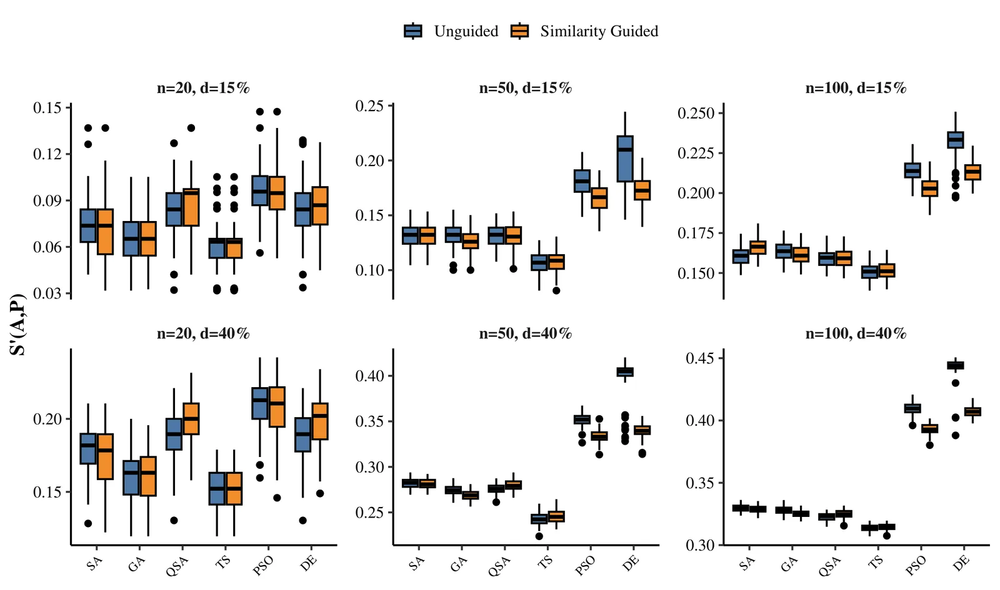
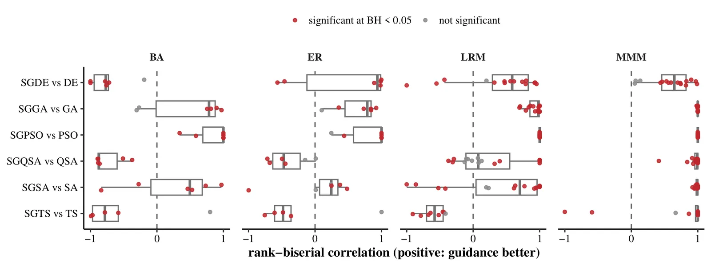
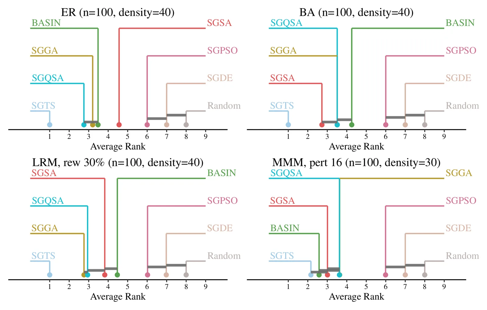

O Problema da Rigidez da Simetria Exata
Em teoria de grafos, a simetria é tradicionalmente definida por automorfismos: permutações exatas dos vértices que preservam todas as arestas. Embora elegante, essa definição é frágil. Em redes reais, como conectomas cerebrais ou redes sociais, pequenas perturbações ou ruídos podem destruir completamente a simetria exata, mesmo que uma estrutura quase-simétrica significativa permaneça.
Para contornar isso, pesquisadores propuseram a detecção de simetria aproximada. Em vez de exigir invariância total, o objetivo é encontrar uma permutação de vértices que minimize o número de desajustes nas arestas. Isso transforma o problema em uma tarefa de otimização sobre o espaço de permutações. O desafio é que esse espaço cresce fatorialmente com o número de nós, tornando a busca exata inviável para grafos grandes.
Além disso, ao procurar simetria em um único grafo (auto-simetria), existe uma solução trivial e sem informação: a identidade, onde cada nó mapeia para si mesmo. O problema precisa ser especificado para evitar essa solução óbvia, geralmente normalizando a função objetivo para penalizar pontos fixos ou exigir correspondências não triviais.
A Hipótese da Similaridade Estrutural
A ideia central deste trabalho é que a informação de similaridade entre nós pode guiar a busca otimizada. A premissa é intuitiva: em uma simetria estrutural, vértices mapeados para si mesmos tendem a ter características estruturais semelhantes, como grau ou centralidade. Se dois nós têm perfis estruturais similares, é mais provável que sejam correspondências válidas em uma simetria aproximada.
Os autores testam se incorporar essa similaridade, medida por medidas de centralidade, nos algoritmos de otimização melhora a capacidade de encontrar permutações de baixa energia (baixo número de desajustes de arestas). Eles adaptam seis algoritmos clássicos — Simulated Annealing (SA), Algoritmos Genéticos (GA), Tabu Search (TS), Particle Swarm Optimization (PSO), Differential Evolution (DE) e Quadratic Symmetry Approximator (QSA) — para incluir essa guia.
Além desses, eles introduzem o BASIN (Bilinear Approximate Symmetry Inference), um método contínuo que aprende embeddings de nós e forma uma matriz de atribuição suave via embeddings bilineares, projetando o resultado final para uma permutação discreta. O BASIN não usa uma guia explícita de similaridade pré-definida, mas aprende a similaridade dos dados.

Metodologia: Algoritmos e Guias
Para cada algoritmo, os autores criaram uma versão 'guiada' (SG). No caso do Simulated Annealing, por exemplo, em vez de propor trocas aleatórias entre vértices, a proposta de troca é enviesada para ocorrer entre vértices com valores de centralidade semelhantes. Isso reduz o espaço de busca efetivo, focando em correspondências estruturalmente plausíveis.
Para o Tabu Search (SGTS) e Algoritmos Genéticos (SGGA), a guia influencia a seleção de vizinhos ou a mutação. O QSA, que relaxa o problema de permutação para uma matriz estocástica dupla, serve como baseline contínuo. O BASIN é treinado para minimizar a discrepância estrutural enquanto aprende representações vetoriais dos nós.
A avaliação usa um pipeline unificado em quatro famílias de grafos sintéticos (Erdős-Rényi, Barabási-Albert, Lateral Random Model com arestas remapeadas e Modular Mirror Model com órbitas plantadas), conectomas cerebrais estruturais e três redes empíricas com grupos de automorfismo conhecidos. A métrica principal é S'(A,P), uma pontuação normalizada que penaliza desajustes de arestas e pontos fixos.
Resultados: Quando a Guia Ajuda?
Os resultados mostram que o uso de similaridade não é universalmente benéfico. No Modular Mirror Model (MMM), onde há uma órbita plantada (uma simetria conhecida que os algoritmos não guiados frequentemente perdem devido a perturbações), a guia de similaridade foi decisiva. Variantes guiadas de SA, GA, QSA e PSO recuperaram a simetria plantada em mais de 85% dos reinícios, enquanto as versões não guiadas falharam em mais de 60% dos casos.
No entanto, em grafos Erdős-Rényi (ER) e Barabási-Albert (BA), que não possuem uma órbita plantada clara, o comportamento foi misto. O SGGA (Genético Guiado) e o SGPSO melhoraram consistentemente em todas as famílias de grafos testadas. O SGDE (Differential Evolution Guiado) foi pior em BA, mas melhor em ER e LRM.
Surpreendentemente, o SGTS (Tabu Search Guiado) foi significativamente pior em muitas condições de ER e LRM. Isso sugere que, em grafos sem estrutura de órbita forte, a guia de centralidade pode introduzir viéses prejudiciais, levando o algoritmo a regiões subótimas do espaço de busca que parecem estruturalmente plausíveis, mas não são as melhores soluções para a minimização de arestas.

Comparação de Algoritmos: O Vencedor
Ao comparar os algoritmos puros, o Tabu Search (TS) emergiu como o mais robusto. Sua versão guiada, SGTS, obteve a mediana mais baixa de escores S'(A,P) entre todas as variantes guiadas em 44 condições sintéticas. O TS explora o espaço de permutações de forma eficiente, evitando mínimos locais através de sua lista tabu, e a guia de similaridade, embora não sempre estatisticamente superior, raramente piora o desempenho em comparação com o TS não guiado.
Entre os métodos contínuos, o BASIN superou o QSA na maioria das condições de grafos LRM remapeados. A capacidade do BASIN de aprender embeddings bilineares permite uma relaxação mais flexível do problema, escapando de mínimos locais que afetam métodos baseados apenas em trocas discretas, como o SA.
O Algoritmo Genético (GA) mostrou-se competente, especialmente quando guiado, mantendo diversidade populacional que ajuda a explorar diferentes regiões do espaço de simetria. O PSO também teve desempenho sólido, beneficiando-se da guia em diversos cenários.
Redes Empíricas e Conectomas
Nos conectomas cerebrais estruturais, não há uma 'resposta correta' única de automorfismo, pois o cérebro humano possui assimetrias anatômicas e funcionais. O objetivo aqui é explorar o espaço de simetrias aproximadas. A guia de similaridade reduziu a variabilidade das soluções: em vez de retornar mapas diferentes a cada reinício, os algoritmos guiados convergiram para soluções mais consistentes.
Isso pode ser uma vantagem ou desvantagem. Se buscamos uma única representação de homologia hemisférica, a guia ajuda. Se estudamos a distribuição de simetrias aproximadas como uma propriedade intrínseca da rede cerebral, a guia pode estar ocultando a diversidade de mapeamentos possíveis. No grafo JAZZ, onde um automorfismo exato existe, a guia ajudou o GA, mas piorou o SA.
Em redes empíricas como PDZ e NETSCIENCE, onde nenhum mapeamento atinge um automorfismo perfeito, as versões guiadas de GA, TS e PSO produziram mapas mais próximos dos subgrupos de autômatos conhecidos (como subgrupos de gêmeos) do que as versões não guiadas. Isso valida a utilidade da guia em redes do mundo real com estrutura parcial.

Limitações e Conclusões
O paper deixa claro que a similaridade de nós não é uma panaceia. Ela é decisiva apenas quando há uma estrutura forte (como uma órbita plantada) que os algoritmos não guiados falham em encontrar. Em grafos aleatórios ou com sinal estrutural fraco, a guia pode ser neutra ou prejudicial, dependendo do algoritmo.
A principal contribuição é a comparação unificada que desmistifica a eficácia da guia. Para aplicações práticas, o Tabu Search guiado (SGTS) é a recomendação principal para equilíbrio entre qualidade e robustez. Para problemas onde a relaxação contínria é necessária ou desejada, o BASIN é superior ao QSA.
Estudos futuros devem investigar guias de similaridade baseadas em métricas além da centralidade, como coeficiente de clustering ou entre-closing, para ver se capturam melhor a estrutura local em grafos heterogêneos. Além disso, a adaptação dinâmica da força da guia durante a otimização pode ser uma linha promissora para evitar os viéses observados em grafos ER.
O que fica
- A guia de similaridade baseada em centralidade melhora significativamente a recuperação de simetrias plantadas, mas pode prejudicar o desempenho em grafos aleatórios (ER/BA) dependendo do algoritmo.
- O Tabu Search Guiado (SGTS) apresentou o melhor desempenho geral, com a menor mediana de erro em 44 condições sintéticas, superando variantes guiadas de SA, GA e PSO.
- O BASIN, um método de embeddings bilineares contínuos, superou o QSA em grafos com desvios complexos de simetria, oferecendo uma alternativa robusta para relaxações de permutação.
- Em redes empíricas e conectomas, a guia reduz a variabilidade das soluções, o que é útil para consistência, mas pode mascarar a diversidade de simetrias aproximadas inerentes à rede.
Paper original: Similarity-Guided Optimization Strategies for Approximate Network Symmetry Detection
Comentários
Nenhum comentário ainda. Seja o primeiro.